Johannesburg Mountain, NE Rib
- Northeast Rib, Western Variation (5.7, IV)
- July 24-25, 2004
Johannesburg Mountain’s north face looks very intimidating from Boston Basin and other points to the north. It is beautiful too, with vast black cliffs and hanging glaciers, pregnant with danger. The Northeast Rib has two routes snaking up almost a vertical mile from the North Fork of the Cascade River below. Theron and I were intent on the most popular of the two, the Western Variation first climbed in 1957. The projection of the rib from the icefalls above protects it from the danger of falling ice.
Theron and I both had some mis-givings about trying this route. It kind of seemed like we said “okay, we are going to climb it,” but secretly wanted to do something with a bit less stress and commitment. There were so many sections of the climb to worry about! It was really on the edge of being “grim duty,” but those memories of seeing the peak from a distance forced us to respond, to answer the call.
We’d had some great help from Robert Meshew, who climbed it with Jesse the year before. He spent half an hour on the phone with me, and sent pictures to help remove some of the unknown. We peppered him with questions in email, much assured by his answers which helped turn something mythical into something ordinary folks can do.
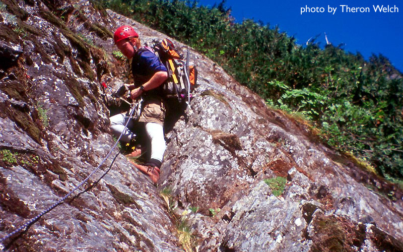
We slept on picnic tables at the trailhead Friday night, intent on an early and fresh start the next morning. We’d brought a stove and sleeping bags for the bivy we expected to make below the glacier, and decided to climb on a doubled 8.5 mm 60 meter rope. We brought a rack of nuts and cams, but left rock shoes at home. Theron brought his video camera, and already edited a movie of the trip available on his site.
In the morning, we crossed the river at dawn, then crossed snow below the great couloir to reach the broad lower rib. Two fellows were contemplating how to get onto the rock. Just below them, I tried to climb a very moated-out snow finger to get onto a ledge. To reach it required a dangerous jump onto sloping ground in crampons. I was so keyed up to begin climbing that I contemplated the move, but good advice from Theron convinced me to back off. Smart! The other party were roping up to cross an ice bridge a little higher. Theron and I introduced ourselves and exchanged beta about the route for a few minutes while we scampered across the bridge (very short and frozen). We hoped to see the guys at the bivy site, but we never saw them again.
On the rock we followed ledges to the right, eventually gaining elevation in gullies. We climbed several hundred feet which included some 5th class moves. Theron suggested roping-up. With 30 meters of rope between us, we kept climbing, occasionally slinging a branch. Rope drag made pitches short, so we got less simul-climbing than we would have liked. At one point, Theron belayed me on a rock/brush pitch to the edge of a slab. I decided to climb it, soon running into 5.8 rock climbing with sparse, but adequate protection excavated from the dirt. I wished for rock shoes! But climbing the thick brush on either side of the slab would probably have been just as time consuming based on our slow progress when we got into that stuff (plus it’s just no fun).
Eventually we got into a long thin gully that led up and left, first via walking, then requiring some scrambling over chockstones or detours into moss and trees on the side. At the head of this gully we saw three options:
- up and left looked good, but suffered from a lot of exposed rock, which we had learned to distrust.
- straight up. It looked steep, but there were strategically placed alder trees that could provide a “Tarzan” way through, plus protection against falls.
- To the right. Looked steep, brushy, but reasonable. We didn’t want to go right though, because we sensed that the snowfield (important source of water) was on our left, and we didn’t want to move further away from it.
I chose to lead up option 2). As I climbed Theron suggested moving left into option 1). It was funny, because I would look to the left and see scary slabs preventing me from getting over there: I had already climbed too high to traverse. I clipped a schrub, then made strenuous moves over an overhang to another shrub. I placed a sling around this schrub, not easy while hanging almost in space. Then another steep move reached a higher schrub on the edge of a cliff. I placed a sling around this one, a difficult task because my arms were withering and my feet were gradually scraping away a mossy ledge that wouldn’t hold my full weight. I decided to hang from the sling and rest. I got an unpleasant surprise when the sling tightened around the schrub and started to pull off, thanks to the schrubs natural bend downward. Tense and tired, I searched for a way up, not liking any of my options, especially because a fall onto the schrub would probably rip the sling off. At this moment the moss ledge gave way in two segments, both sending a volley of dirt and rock onto Theron, and leaving me hanging from the tightening sling, which I thought would rip off! “Oww!” said Theron, hit on the helmet by a rock.
Okay I had to get out of there. “Theron, lower me from the sling” I said, “gently!” I braced for a fall, prepared to lunge for the schrub below me in the hopes of catching myself. The girth-hitched sling lifted off some more under my weight (actually double my weight because of the physics of lowering), but then cinched tight enough to hold…for the moment. Once lowered below my “lunge schrub,” I wanted to hurry. “Faster!” I yelled raggedly, when Theron didn’t hear me at first. I really did expect to hit the ground and start tumbling. He got me safely down, where I was full of adrenaline. “Expletive expletive!!” I said. I was very lucky, but kicking myself for getting into such a jam. We pinned our hopes on Theron finding a way out on the left.
This he did perfectly. With only one tricky move, he got onto the left wall of the gully, and easily climbed out to a belay in steep jungle. I took off, eager to shake the bad memory out of my brain, climbing trees then rock, then thick but pleasant brush (no thorns). I was extremely elated to see the angle lesson, and realize the snowfield would soon come into view. I’d already given up on it, doomed to a long thirsty day without water. Theron followed on the rope, and we climbed to a ramp next to the snowfield, dropped our packs and headed over to get some water.
After a great rest, re-hydration, and much analysis of the scary pitch below, Theron led up the ramp and into steep forest. This was a pleasant pitch. He then led again for another section, first trying to the right then traversing back left, wisely avoiding the climb of a steep wall. I went for a long pitch up forest to a rock wall, chosing to climb it directly because the protection was decent, and the holds were blocky. Naturally, my luck ran out near the top and I was forced to reach far out in space for a slender branch. I pulled hard, but it held fast. I swung onto the branch and pulled myself up to another branch, then another and another, each one taking me a little further away from the yawning abyss below. I reached a tree, anchored in and listlessly belayed Theron. His final lead took us to beautiful open heather slopes on the ridge crest! What a happy moment!
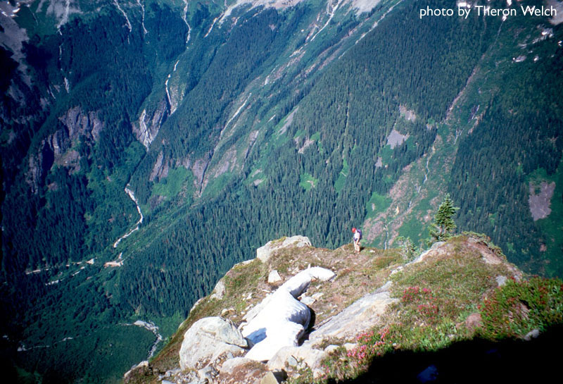
At least until we looked up. We had so far to go to get to our bivy location with water, that the rock high above was faded in the afternoon haze. I had a comical but irritating situation with my Platypus water bladder. The “nipple” had fallen off, so every time I leaned over, precious water would spill onto my shoes. “Damn it!” I would say. I would blow air into the unit to keep the water inside. But after a while, this would backfire and water would shoot out straight into the air at the worst possible moments. “Argh!” Note to self, always bring a cap in case the hose breaks in the future.
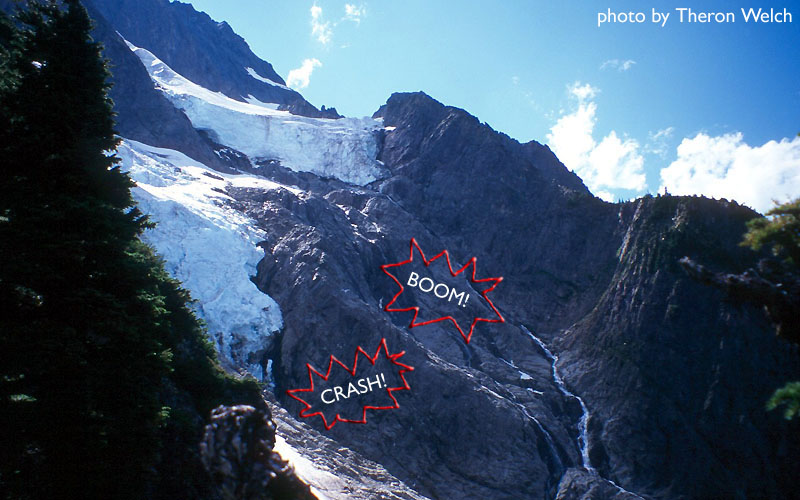
We hiked up the heather, which was steep enough to keep me in an ape-like posture, grabbing bunchfuls, and generally tugging on any “green spirits” that came within reach of my hands. There were bits of trail in this section, and even a short level spot on the ridge. Overall though, the angle was relentless, and as the afternoon wore on, we started to feel like we’d been climbing like this since the dawn of time. After a very long time, the ridge became narrower and craggier, and we finally reached the mysterious notch which marked a fork in the road.
A piton and rappel slings marked a descent into a deep snow couloir on the right. This looked foreboding. We chose instead to climb up and left for a supposed “5.3 chimney.” Robert advised us to traverse left for a while, and not get enticed up steep walls too early (he described them as “Exit 38 style 5.9 walls,” which I took to mean protection was non-existent). I went around the corner and belayed Theron to a stance. I attempted a wide-crack/chimney by placing a thin nut and tensioning left to the base of the chimney. Boy, it looked dubious. I fumbled to get a sling around a chockstone, but felt “wrong” about it. Climbing back down to the belay, I tried going up and around a steep corner. Theron kept me on a tight belay as I carefully moved up and left to reach a good hand jam where I could place a cam. Thankful for the protection, I crabbed upwards, now aware of the huge air beneath me: dirty slabs harrowed down, unbroken for thousands of feet. It was so easy to imagine tumbling and bouncing. The glacier on the right had given me a show an hour before that I couldn’t get out of my head. I saw rocks and ice fling themselves on tremendous bounces, tumbling in the air for 3-4 seconds at a time in a wasteland without security. A metaphor for the whole day, a day without true security - every stance sloping, protection worrisome, holds not worthy of your trust. It was hard to revel in the exposure the way I like to do. We have no pictures or video of those pitches between the notch and the bivy site. We were unwilling to linger or use hands for anything other than getting up to hoped-for security.
Theron wasn’t keen to lead, but I was delicately clove-hitched into several marginal pieces. He climbed cracks and corners up and left, setting a belay after 30 meters. I followed, cleaning the single cam he’d been able to place in an extracted mud-hole halfway up a dihedral. I led up from another dubious belay, hoping to regain the crest as the face was rather hostile to good protection for the rope. After 40 meters or so, I was able to crab rightward to the crest, and set a belay among the usual stacked blocks, knowing the bivy site was close. Theron and I exchanged “whew!” noises and continued another 200 feet to the brief oasis of level ground that marked our home for the night. We were elated to find running water from a snowpatch! And a place for Theron to bathe!
We settled in, quickly making a country home, gear scattered all over the place. Looking down at the parking lot was my favorite pasttime - my car was so tiny! We had a good view across the cliffs to the Cascade-Johannesburg Col, where we hoped to end up the next day on the way down. We ate dinner as the sun went down behind Mt. Baker and “magic hour” began. Pink slopes turned to cold blue and the stars came out. We wrestled with our gear to make decent sleeping platforms. I had all kinds of things stuffed beneath me to make up for the lack of a sleeping pad. We gnawed on our private worries. Theron was concered about the glacier travel the next day, while my thoughts lingered on descending the mountain safely. What an amazing place to be in!
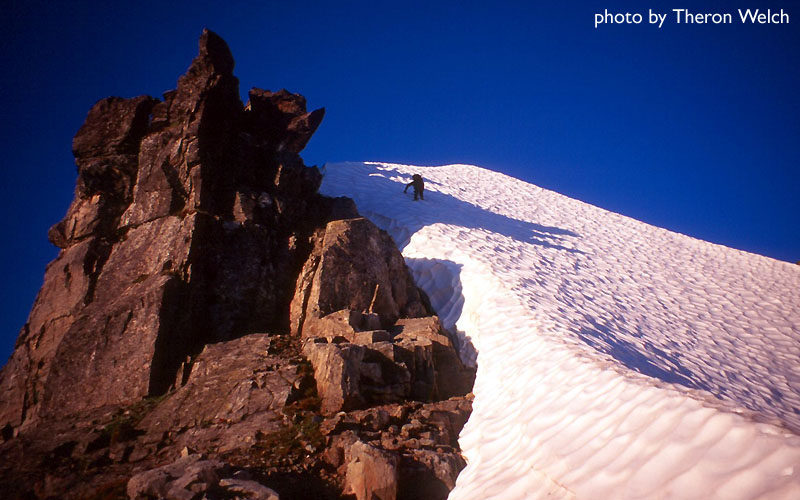
The next morning, I coaxed Theron up at sunrise to much grumbling! But I was a nervous hen, not wanting to be stuck out another night. I was soon packed and cramponing up a snow arete to a high perch with views of the glacier ahead. Theron came up, and we enjoyed a beautiful fin of snow suspended in the sky. This is where the gods would walk. As the wind blew and the valley slowly came into sun, I could “smell the summit,” get that feeling of a kick ass day in the mountains. We passed an impressive vertical ice cliff on the left, then crossed a major crevasse on it’s right side to reach an upper staging area. Theron suggested climbing the steep-looking snow slope above, then entering the moat between snow and rock next to a tower on the ridge crest. He led up carefully, kicking good steps on the snowfield that wasn’t as steep as it looked from below. When he reached the rock, I traversed left, and climbed snow that became pretty icy to begin stemming between ice and rock in the moat. This was fun! I reached the ridge crest and videotaped Theron’s last steps into the notch.
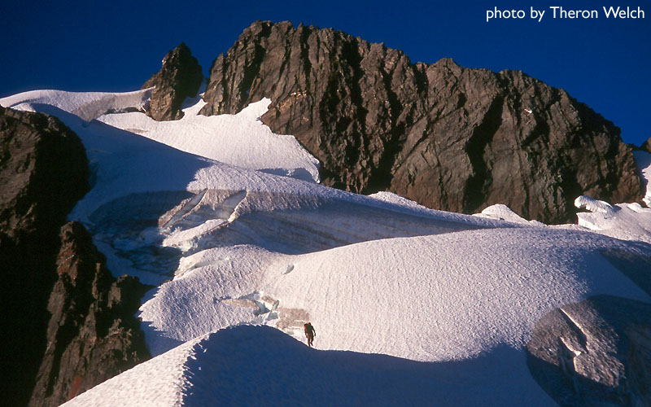
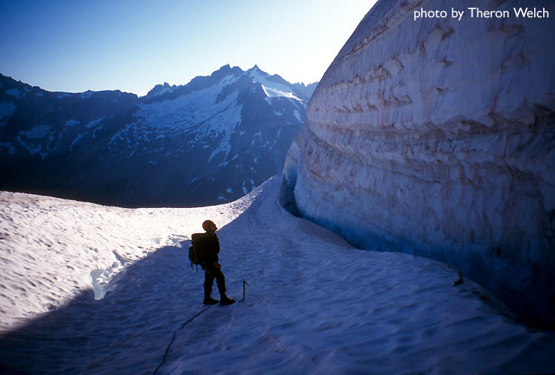
Wow! Excited, I quickly removed crampons, dropped the pig (pack), and led off towards the summit. A pitch of 3rd class scrambling got me there, and Theron came right behind. Holy cow, we had crawled out of a deep hole, 5000 feet deep! We were elated, it felt like such a hard-won summit psychologically. And we were covered in scratches and scrapes from the day before too.
The summit register was fun to read. There were plenty of folks who climbed the route faster that is for sure. But it was great to add our names; for us it was a major accomplishment. We saw Robert and Jesse’s entry from the year before. Wow.
Jeez.
Man.
Okay, I guess we’d better get down.
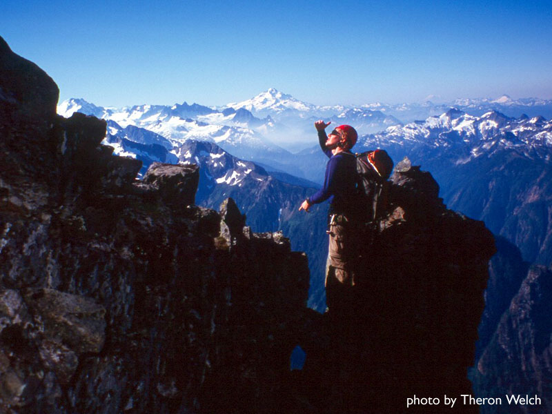
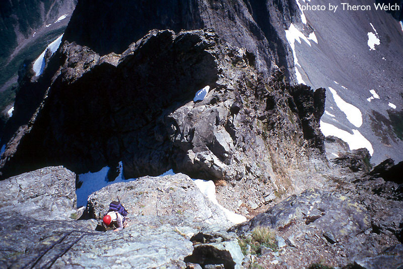
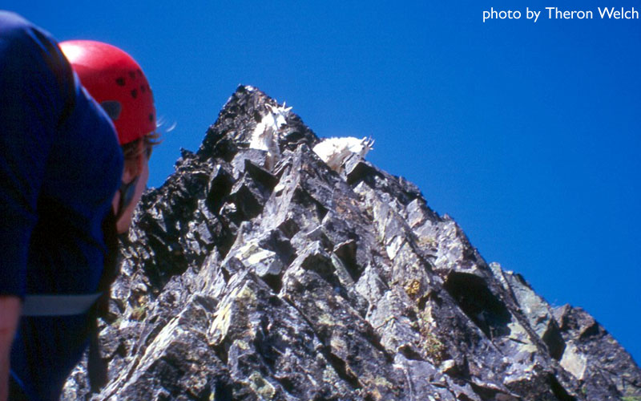
Robert’s advice was to stay on or near the ridge crest for pretty much the whole descent, making rappels when needed. We followed our noses on the right side of one tower after another, finding evidence of a path winding across ribs. At one point it looked like a path went down into a deep (intimidating) gully. We stayed high, and after 30 minutes or so walked on the ridge crest for a while. Coming to a cliff, we found the first obvious rappel point. We could make 30 meter rappels, and were a little worried about them being too short. I took the first one, finding a sling around a horn just at the end of the rope. It’s always a little apprehensive, hoping to find another anchor somewhere lower on the cliff, hoping you are heading in the right direction. We took turns, making 7 rappels total on the descent. I’m pretty sure the regular route went somewhere in gullies to the south of the cliffs we descended, but I think it was just as fast, and good advice for someone not familiar with the normal East Ridge ascent route.
After the first four rappels, we scrambled down and left to regain the crest for an increasingly steep walk towards the CJ Col. When things got steep we found another rappel sling on the right, and continued for 3 more raps. Theron left a sling around a large flake for the last rappel. Once at the Col, we began glissading to the south listening to a huge rockfall possibly caused by goats we had seen just above us at one point. We were down!
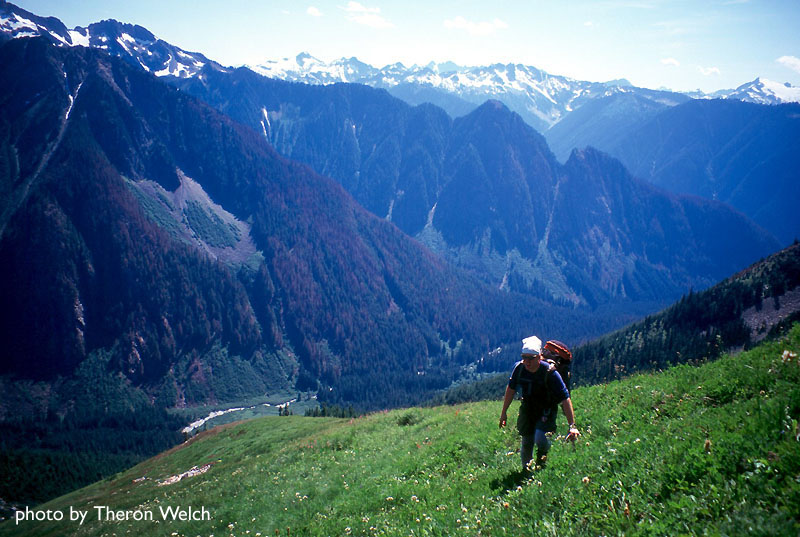
Relaxing on heather next to a stream, we “reconstituted,” drinking cold water, enjoying bare feet on dry ground, marvelling at the North Face of Mt. Formidable across the valley. We relived highlights of the climb and descent. Man!
Rather slowly, we gathered our things and hiked below The Triplets at 5800 feet, turning up to reach the ridge between that peak and Mix-up Peak at 7200 feet. John Sharp filled us in on this alternative descent to Cascade Pass called “Doug’s Direct” (most folks go through Gunsight Notch, traversing cliffs of Mix-up Peak). To reach the ridge, we climbed steep heather slopes as high as possible, then continued up 200 feet of easy rock to reach the crest. From here, we could scramble easily down to the glacier, about 400 feet below. We descended some exceptionally clean and solid rock, really surprising after so much junk. The 3rd and 4th class slopes eventually led to hard snow, which we quickly cramponed down about 800 feet to reach the informal trail leading to Cascade Pass. I was so pleased to be here with plenty of daylight left. After a rest at the pass, we continued down, passing a nanny goat and her cub walking on the trail! The rest of the way was dominated by the presence of “JoBurg” in front of us. It also filled my brain, simmering warm and spicy!
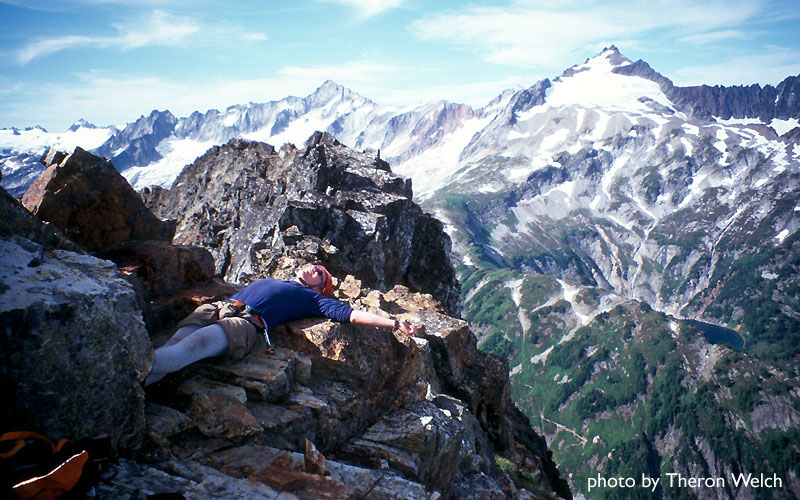
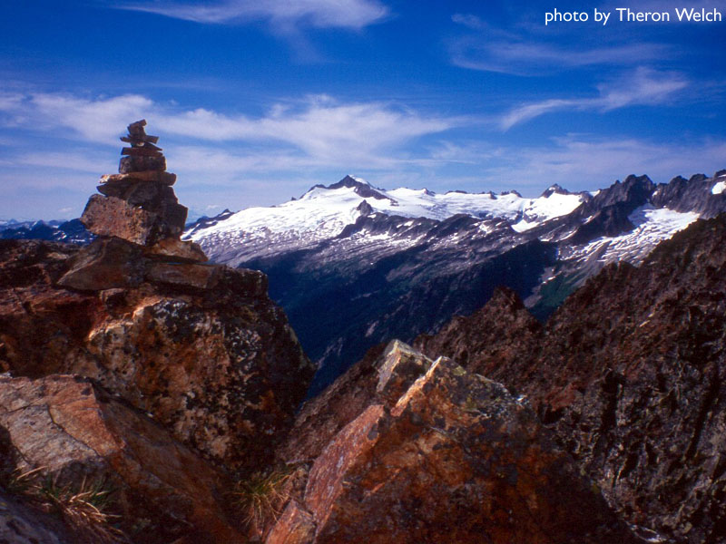
As we drove away (first having a great talk with Max Block on the road), I was already imagining doing another climb of the peak, probably one of the routes above the Sill Glacier. We’ll see! I don’t think climbers should be dissuaded from climbing this peak because of the dirty rock and brush. It is a special climb despite all that. We had a hard time, but a great time too. I would keep extemporizing, but unfortunately “I love the 80s” is on, and I need to devote time to that.